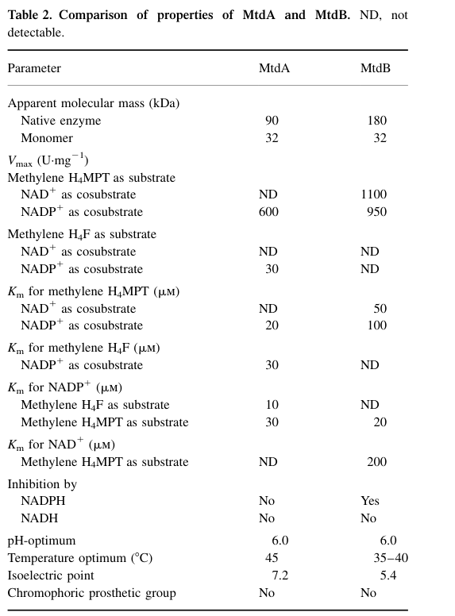

mtdB encodes NAD(P)-dependent methylenetetrahydromethanopterin dehydrogenase (EC 1.5.1.-), which catalyzes the second step in the formaldehyde degradation pathway via the H4MPT route. The enzyme oxidizes 5,10-methylenetetrahydromethanopterin (the product of the fae reaction) to 5,10-methenyltetrahydromethanopterin, using either NAD+ or NADP+ as electron acceptor to produce NADH or NADPH; it has higher apparent affinity for NADP+ (Km ~20 uM) than NAD+ (Km ~200 uM) but, unlike the bifunctional MtdA, does NOT act on methylene-tetrahydrofolate (methylene-H4F), making it dedicated to the H4MPT-linked branch. The protein functions as a homohexamer (~32 kDa subunit, ~180 kDa native) and is a soluble/cytosolic enzyme (activity absent from the membrane fraction). mtdB is essential for methylotrophic growth - mtdB mutants cannot grow on methanol and are highly formaldehyde-sensitive - and is the primary methylene-dH4MPT dehydrogenase in vivo; MtdA cannot substitute for it. Direct protein sequencing confirms this is one of the core enzymes in the methylotrophic C1 metabolic pathway.
| GO Term | Evidence | Action | Reason |
|---|---|---|---|
|
GO:0005737
cytoplasm
|
IEA
GO_REF:0000044 |
ACCEPT |
Summary: Correct - MtdB is a soluble/cytosolic enzyme. Beyond the UniProt subcellular location inference, cell fractionation in the biochemical characterization study found NAD(P)-dependent methylene-H4MPT dehydrogenase activity absent from the membrane fraction, directly supporting a cytosolic localization [file:METEA/mtdB/mtdB-uniprot.txt, "SUBCELLULAR LOCATION: Cytoplasm"].
Supporting Evidence:
file:METEA/mtdB/mtdB-deep-research-falcon.md
not found in the membrane fraction**, supporting that MtdB functions as a **soluble/cytosolic enzyme
|
|
GO:0006730
one-carbon metabolic process
|
IEA
GO_REF:0000043 |
ACCEPT |
Summary: Correct - MtdB is a central enzyme in C1 (one-carbon) metabolism, catalyzing step 2 of the H4MPT-linked formaldehyde degradation pathway and is required for methylotrophic growth on methanol [file:METEA/mtdB/mtdB-uniprot.txt, "PATHWAY: One-carbon metabolism; formaldehyde degradation; formate from formaldehyde (H(4)MPT route): step 2/5"].
Supporting Evidence:
file:METEA/mtdB/mtdB-deep-research-falcon.md
mtdB mutants cannot grow on methanol** but can grow on multicarbon substrates (e.g., succinate), and are **highly formaldehyde-sensitive
|
|
GO:0016491
oxidoreductase activity
|
IEA
GO_REF:0000120 |
MODIFY |
Summary: Correct but far too general. MtdB is a dehydrogenase that oxidizes the methylene (CH-NH) bridge of 5,10-methylenetetrahydromethanopterin to the methenyl form using NAD+ or NADP+ as the electron acceptor [file:METEA/mtdB/mtdB-uniprot.txt, "NAD(P)-dependent methylenetetrahydromethanopterin dehydrogenase"]. The precise child term is GO:0016646 "oxidoreductase activity, acting on the CH-NH group of donors, NAD or NADP as acceptor", which exactly captures both the CH-NH donor chemistry of methylene-H4MPT and the NAD(P) acceptor. (A previous draft proposed GO:0016638, which is "acting on the CH-NH2 group of donors" - that is the wrong donor chemistry, since MtdB acts on a CH-NH methylene bridge, not a primary CH-NH2 amine.)
Proposed replacements:
oxidoreductase activity, acting on the CH-NH group of donors, NAD or NADP as acceptor
Supporting Evidence:
file:METEA/mtdB/mtdB-deep-research-falcon.md
NAD(P)-dependent methylene‑H4MPT (dH4MPT) dehydrogenase catalyzing methylene‑H4MPT → methenyl‑H4MPT; does not act on methylene‑H4F
file:METEA/mtdB/mtdB-deep-research-falcon.md
uses both NAD+ and NADP+** and **does not act on methylene-H4F
|
|
GO:0046294
formaldehyde catabolic process
|
IEA
GO_REF:0000041 |
ACCEPT |
Summary: Correct - MtdB catalyzes step 2 of formaldehyde degradation via the H4MPT route, oxidizing the product of fae to continue the pathway toward formate [file:METEA/mtdB/mtdB-uniprot.txt, "formaldehyde degradation; formate from formaldehyde (H(4)MPT route): step 2/5"]. Genetic evidence confirms the physiological role: mtdB mutants are formaldehyde-hypersensitive and cannot grow on methanol, and loss of mtdB perturbs H4MPT-intermediate pools in vivo.
Supporting Evidence:
file:METEA/mtdB/mtdB-deep-research-falcon.md
MtdB is therefore the primary methylene-dH4MPT dehydrogenase in vivo and helps sustain flux from formaldehyde toward formate
file:METEA/mtdB/mtdB-deep-research-falcon.md
~5-fold accumulation** of **dH4MPT** and **2–3-fold increase** in **methenyl-dH4MPT** in the mtdB mutant
|
The research report should be a detailed narrative explaining the function, biological processes, and localization of the gene product. Citations should be given for all claims.
You should prioritize authoritative reviews and primary scientific literature when conducting research. You can supplement
this with annotations you find in gene/protein databases, but these can be outdated or inaccurate.
We are specifically interested in the primary function of the gene - for enzymes, what reaction is catalyzed, and what is the substrate specificity? For transporters, what is the substrate? For structural proteins or adapters, what is the broader structural role? For signaling molecules, what is the role in the pathway.
We are interested in where in or outside the cell the gene product carries out its function.
We are also interested in the signaling or biochemical pathways in which the gene functions. We are less interested in broad pleiotropic effects, except where these elucidate the precise role.
Include evidence where possible. We are interested in both experimental evidence as well as inference from structure, evolution, or bioinformatic analysis. Precise studies should be prioritized over high-throughput, where available.
This report targets UniProt O85012, annotated as NAD(P)-dependent methylenetetrahydromethanopterin dehydrogenase (EC 1.5.1.-) encoded by mtdB in Methylorubrum extorquens strain AM1 (formerly Methylobacterium extorquens AM1). Primary literature in this exact organism/strain identifies mtdB (historically described as orfX) as a “second” methylene‑H4MPT dehydrogenase distinct from mtdA and catalyzing the same H4MPT-linked oxidation step but with different cofactor usage and in vivo role. (hagemeier2000characterizationofa pages 1-2, martinezgomez2013elucidationofthe pages 1-2)
Important limitation: The provided ordered locus name (MexAM1_META1p1761) did not appear in the retrieved full-text corpus, so an explicit locus-tag ↔ UniProt accession mapping could not be independently confirmed here; the functional identity of mtdB/MtdB in AM1 is, however, supported by multiple AM1-specific primary studies. (hagemeier2000characterizationofa pages 1-2, martinezgomez2013elucidationofthe pages 1-2)
In serine-cycle methylotrophs such as Methylorubrum extorquens, formaldehyde generated from methanol (or other methylated substrates) is processed through a tetrahydromethanopterin (H4MPT)-linked pathway that channels formaldehyde into formate and connects to assimilation via H4F-linked one-carbon chemistry. Reviews emphasize that the H4MPT-mediated route (formaldehyde → formate → methylene-H4F) can dominate assimilatory flux in M. extorquens compared with direct spontaneous condensation of formaldehyde with H4F. (klein2022unravellingformaldehydemetabolism pages 11-12, klein2022unravellingformaldehydemetabolism pages 12-14)
Mtd enzymes catalyze the oxidation of methylene‑H4MPT (or methylene‑dH4MPT) to methenyl‑H4MPT, using NAD(P)+ as electron acceptor. In AM1, two enzymes are emphasized:
- MtdA: primarily NADP-specific and bifunctional in that it can also participate in H4F-linked reactions (methylene-H4F dehydrogenase activity). (martinezgomez2013elucidationofthe pages 5-6, martinezgomez2013elucidationofthe pages 1-2)
- MtdB (this report): an “alternative”/second methylene‑H4MPT dehydrogenase that uses both NAD+ and NADP+ and does not act on methylene-H4F. (hagemeier2000characterizationofa pages 3-5, hagemeier2000characterizationofa pages 1-2, martinezgomez2013elucidationofthe pages 5-6)
Biochemical characterization of purified AM1 MtdB established that it catalyzes:
methylene‑H4MPT + NAD(P)+ → methenyl‑H4MPT + NAD(P)H
with both NAD+ and NADP+ serving as cosubstrates in vitro. (hagemeier2000characterizationofa pages 1-2, hagemeier2000characterizationofa pages 3-5)
MtdB was reported to not catalyze the dehydrogenation of methylene‑H4F (tetrahydrofolate-linked), distinguishing it from MtdA’s bifunctionality and supporting a dedicated role in the H4MPT-linked branch. (hagemeier2000characterizationofa pages 3-5, hagemeier2000characterizationofa pages 1-2, martinezgomez2013elucidationofthe pages 1-2)
Hagemeier et al. (publication date: June 2000; URL: https://doi.org/10.1046/j.1432-1327.2000.01413.x) reported Michaelis–Menten parameters for MtdB with methylene‑H4MPT and alternative cofactors:
- Km(methylene‑H4MPT) ≈ 50 µM with NAD+ and ≈ 100 µM with NADP+. (hagemeier2000characterizationofa pages 3-5, hagemeier2000characterizationofa pages 1-2)
- Km(NAD+) ≈ 200 µM; Km(NADP+) ≈ 20 µM, indicating much higher apparent affinity for NADP+ despite dual cofactor capability. (hagemeier2000characterizationofa pages 3-5, hagemeier2000characterizationofa pages 1-2)
- Vmax ≈ 1100 U·mg−1 (with NAD+) and ≈ 950 U·mg−1 (with NADP+) for methylene‑H4MPT oxidation. (hagemeier2000characterizationofa pages 3-5)
These values are also supported by the directly retrieved visual content (Table 2 and kinetic plots) from the same paper. (hagemeier2000characterizationofa media 861c9c56, hagemeier2000characterizationofa media 58a702a3)
NADPH was reported as a noncompetitive inhibitor of MtdB, whereas NADH did not inhibit the enzyme under the tested conditions. (hagemeier2000characterizationofa pages 3-5)
Cell fractionation in the biochemical study indicated that NAD(P)-dependent methylene‑H4MPT dehydrogenase activity was not found in the membrane fraction, supporting that MtdB functions as a soluble/cytosolic enzyme rather than being membrane-associated. (hagemeier2000characterizationofa pages 2-3)
Purified MtdB was reported as ~32 kDa per subunit and ~180 kDa native mass, consistent with a homohexameric enzyme complex. (hagemeier2000characterizationofa pages 3-5, hagemeier2000characterizationofa pages 5-7)
Genetic evidence from AM1 shows mtdB mutants cannot grow on methanol but can grow on multicarbon substrates (e.g., succinate), and are highly formaldehyde-sensitive, implicating MtdB as a key component of formaldehyde oxidation/detoxification required for methylotrophic growth. (hagemeier2000characterizationofa pages 3-5, hagemeier2000characterizationofa pages 5-7, martinezgomez2013elucidationofthe pages 2-3)
A key experiment supporting formaldehyde toxicity as the underlying problem is that double mutants (mtdB mxaF) could grow on succinate in the presence of methanol, consistent with methanol oxidation (via methanol dehydrogenase, MxaF) being upstream of formaldehyde generation; removing MxaF reduces formaldehyde stress, alleviating toxicity when MtdB is absent. (hagemeier2000characterizationofa pages 5-7)
Although MtdA and MtdB catalyze the same H4MPT-linked oxidation step in vitro, in vivo MtdA cannot substitute for MtdB: Martinez-Gomez et al. (publication date: May 2013; URL: https://doi.org/10.1128/JB.00029-13) report that MtdA is unable to replace MtdB, and that overexpression of mtdA did not restore growth on methanol in an mtdB mutant background. (martinezgomez2013elucidationofthe pages 5-6, martinezgomez2013elucidationofthe pages 6-8)
Loss of mtdB leads to accumulation of H4MPT-linked intermediates:
- ~5-fold accumulation of dH4MPT and 2–3-fold increase in methenyl-dH4MPT in the mtdB mutant. (martinezgomez2013elucidationofthe pages 6-8)
Importantly, the accumulated methenyl-dH4MPT can inhibit H4F-linked assimilation reactions: methenyl-dH4MPT competitively inhibited MtdA-catalyzed reduction of methenyl-H4F to methylene-H4F, with an estimated Ki ~10−4 M (as reported in the snippet). (martinezgomez2013elucidationofthe pages 5-6, martinezgomez2013elucidationofthe pages 1-2)
This provides a mechanistic explanation for why perturbations in the H4MPT oxidation branch (via MtdB loss or altered activity) can propagate to flux partitioning between oxidation and assimilation in serine-cycle methylotrophy. (martinezgomez2013elucidationofthe pages 1-2)
Hying et al. (publication date: July 2024; URL: https://doi.org/10.1128/aem.02090-23) studied how Methylorubrum extorquens PA1 can acquire the ability to utilize glycine betaine (GB), a plant-derived compound whose degradation generates formaldehyde. They observed:
- Elevated formaldehyde in culture supernatants during growth on GB compared with pyruvate (measured by a colorimetric assay; significance reported in the figure-based result). (hying2024glycinebetainemetabolism pages 6-9)
- Increased expression (induction) of C1 metabolism genes including fae and mtdB during GB utilization relative to non-methylotrophic growth conditions, consistent with engagement of the H4MPT-linked formaldehyde oxidation pathway. (hying2024glycinebetainemetabolism pages 6-9)
- A markerless deletion of fae in the GB-utilizing background abolished growth on GB (but not on pyruvate), demonstrating that formaldehyde processing through the methylotrophy-linked module is required for this newly enabled carbon utilization phenotype. (hying2024glycinebetainemetabolism pages 6-9)
While this paper is in strain PA1 (not AM1), it is a recent, authoritative demonstration that mtdB-associated formaldehyde oxidation remains a central physiological module enabling exploitation of new environmental substrates that generate formaldehyde. (hying2024glycinebetainemetabolism pages 6-9)
Within the retrieved and accessible set of documents, no 2023–2024 primary studies were found that provide new AM1 MtdB kinetic constants, crystal/cryo-EM structures, or revised substrate specificity beyond the established foundational work. This is a limitation of the current tool-retrieved corpus rather than proof that such studies do not exist. (hagemeier2000characterizationofa pages 3-5, hying2024glycinebetainemetabolism pages 6-9)
Lim et al. (publication date: May 2019; URL: https://doi.org/10.3389/fmicb.2019.01027) engineered Methylorubrum extorquens AM1 to produce itaconic acid from methanol and other substrates, illustrating real-world use of AM1’s methylotrophic network (which depends on formaldehyde oxidation capacity) as a biomanufacturing chassis.
Quantitative bioprocess metrics reported include:
- 31.6 ± 5.5 mg/L itaconic acid titer in batch culture with methanol as carbon source. (lim2019designingandengineering pages 1-2)
- In a fed-batch bioreactor (60% dissolved oxygen), 5.4 ± 0.2 mg/L titer and 0.056 ± 0.002 mg/L/h productivity. (lim2019designingandengineering pages 1-2)
Although the work did not engineer mtdB directly, it highlights the importance of formaldehyde oxidation modules for robust methanol-based production systems.
In the same study, transcriptomics of an engineered regulatory mutant (ΔphaR) reported up-regulation of mtdB, and the authors discussed that increased MtdB could raise methenyl-dH4MPT levels and thereby inhibit MtdA’s H4F-linked assimilation activity—potentially affecting growth/flux balance during methanol-based production. (lim2019designingandengineering pages 8-10)
A broad expert review of bacterial formaldehyde metabolism and synthetic methylotrophy emphasized that the H4MPT-linked route is a core formaldehyde oxidation/detoxification strategy in methylotrophs and is directly relevant to engineering approaches that aim to manage formaldehyde toxicity while enabling C1 assimilation. (klein2022unravellingformaldehydemetabolism pages 27-28, klein2022unravellingformaldehydemetabolism pages 11-12, klein2022unravellingformaldehydemetabolism pages 12-14)
Within this conceptual framing, Mtd enzymes (including MtdB-like dehydrogenases) are “central processing” steps that couple H4MPT-bound C1 conversions to the cellular redox cofactors (NAD(P)H), shaping both detoxification capacity and energy conservation. (klein2022unravellingformaldehydemetabolism pages 27-28, klein2022unravellingformaldehydemetabolism pages 12-14)
Key quantitative values directly supporting functional annotation include:
- MtdB kinetics (AM1, purified enzyme): Km(methylene‑H4MPT) ~50 µM (with NAD+) or ~100 µM (with NADP+); Km(NAD+) ~200 µM; Km(NADP+) ~20 µM; Vmax ~1100 or ~950 U·mg−1 depending on cosubstrate. (hagemeier2000characterizationofa pages 3-5, hagemeier2000characterizationofa media 861c9c56)
- In vivo metabolite shifts (AM1 mtdB mutant): ~5× dH4MPT; 2–3× methenyl-dH4MPT. (martinezgomez2013elucidationofthe pages 6-8)
- Cross-pathway inhibition constant: methenyl-dH4MPT competitive inhibition of MtdA H4F-linked activity with reported Ki ~10−4 M. (martinezgomez2013elucidationofthe pages 5-6)
- Bioprocess demonstration (AM1 engineered, methanol substrate): 31.6 ± 5.5 mg/L batch itaconic acid; 5.4 ± 0.2 mg/L fed-batch; productivity 0.056 ± 0.002 mg/L/h. (lim2019designingandengineering pages 1-2)
The table below consolidates the key claims, quantitative parameters, and sources.
| Claim/topic | Key quantitative details | Evidence type | Source with year + DOI URL |
|---|---|---|---|
| Verified enzyme reaction | MtdB catalyzes oxidation of methylene-H4MPT (also described as methylene-dH4MPT) to methenyl-H4MPT using NAD+ and/or NADP+ as electron acceptors; no activity reported on methylene-H4F (hagemeier2000characterizationofa pages 1-2, martinezgomez2013elucidationofthe pages 1-2) | Biochemical, pathway assignment | Hagemeier et al., 2000, https://doi.org/10.1046/j.1432-1327.2000.01413.x (hagemeier2000characterizationofa pages 1-2); Martinez-Gomez et al., 2013, https://doi.org/10.1128/JB.00029-13 (martinezgomez2013elucidationofthe pages 1-2) |
| Cofactor specificity | Both NAD+ and NADP+ serve as cosubstrates; Km(NAD+) ≈ 200 µM, Km(NADP+) ≈ 20 µM, indicating stronger apparent affinity for NADP+; MtdA contrasts by using only NADP+ (hagemeier2000characterizationofa pages 3-5, martinezgomez2013elucidationofthe pages 5-6, martinezgomez2013elucidationofthe pages 2-3) | Biochemical, comparative enzymology | Hagemeier et al., 2000, https://doi.org/10.1046/j.1432-1327.2000.01413.x (hagemeier2000characterizationofa pages 3-5); Martinez-Gomez et al., 2013, https://doi.org/10.1128/JB.00029-13 (martinezgomez2013elucidationofthe pages 5-6, martinezgomez2013elucidationofthe pages 2-3) |
| Substrate specificity | Km(methylene-H4MPT) ≈ 50 µM with NAD+ and ≈100 µM with NADP+; MtdB does not dehydrogenate methylene-H4F and lacks methenyl-H4MPT cyclohydrolase activity (hagemeier2000characterizationofa pages 3-5, hagemeier2000characterizationofa pages 1-2) | Biochemical | Hagemeier et al., 2000, https://doi.org/10.1046/j.1432-1327.2000.01413.x (hagemeier2000characterizationofa pages 3-5, hagemeier2000characterizationofa pages 1-2) |
| Catalytic capacity / kinetics | Vmax ≈ 1100 U·mg−1 with NAD+ and ≈950 U·mg−1 with NADP+ for methylene-H4MPT oxidation; purified recombinant enzyme specific activity also reported around 680 U·mg−1 (hagemeier2000characterizationofa pages 3-5, hagemeier2000characterizationofa pages 5-7) | Biochemical | Hagemeier et al., 2000, https://doi.org/10.1046/j.1432-1327.2000.01413.x (hagemeier2000characterizationofa pages 3-5, hagemeier2000characterizationofa pages 5-7) |
| Inhibitor sensitivity | NADPH acts as a noncompetitive inhibitor of MtdB, whereas NADH shows no inhibitory effect in the reported assays (hagemeier2000characterizationofa pages 3-5) | Biochemical | Hagemeier et al., 2000, https://doi.org/10.1046/j.1432-1327.2000.01413.x (hagemeier2000characterizationofa pages 3-5) |
| Oligomeric state | Subunit mass ≈32 kDa; native enzyme ≈180 kDa, consistent with a homohexamer (hagemeier2000characterizationofa pages 3-5, hagemeier2000characterizationofa pages 5-7) | Biochemical, protein characterization | Hagemeier et al., 2000, https://doi.org/10.1046/j.1432-1327.2000.01413.x (hagemeier2000characterizationofa pages 3-5, hagemeier2000characterizationofa pages 5-7) |
| Localization / cellular compartment | NAD(P)-dependent methylene-H4MPT dehydrogenase activity was absent from the membrane fraction, supporting a soluble/cytosolic localization rather than membrane association (hagemeier2000characterizationofa pages 2-3) | Cell fractionation, biochemical | Hagemeier et al., 2000, https://doi.org/10.1046/j.1432-1327.2000.01413.x (hagemeier2000characterizationofa pages 2-3) |
| Mutant phenotype on C1 growth | mtdB insertion/deletion mutants lost the ability to grow on methanol but still grew on succinate; they were also highly formaldehyde-sensitive (hagemeier2000characterizationofa pages 3-5, hagemeier2000characterizationofa pages 5-7, martinezgomez2013elucidationofthe pages 2-3) | Genetics, physiology | Hagemeier et al., 2000, https://doi.org/10.1046/j.1432-1327.2000.01413.x (hagemeier2000characterizationofa pages 3-5, hagemeier2000characterizationofa pages 5-7); Martinez-Gomez et al., 2013, https://doi.org/10.1128/JB.00029-13 (martinezgomez2013elucidationofthe pages 2-3) |
| Formaldehyde toxicity evidence | Double mtdB mxaF mutants could grow on succinate in the presence of methanol, supporting the conclusion that formaldehyde is the toxic intermediate whose oxidation/detoxification depends on the H4MPT pathway including MtdB (hagemeier2000characterizationofa pages 3-5, hagemeier2000characterizationofa pages 5-7) | Genetics, physiology | Hagemeier et al., 2000, https://doi.org/10.1046/j.1432-1327.2000.01413.x (hagemeier2000characterizationofa pages 3-5, hagemeier2000characterizationofa pages 5-7) |
| Pathway role / metabolite-pool effects | In the mtdB mutant, dH4MPT accumulated ~5-fold and methenyl-dH4MPT increased ~2–3-fold; MtdB is therefore the primary methylene-dH4MPT dehydrogenase in vivo and helps sustain flux from formaldehyde toward formate (martinezgomez2013elucidationofthe pages 6-8, martinezgomez2013elucidationofthe pages 2-3) | Genetics, metabolite analysis | Martinez-Gomez et al., 2013, https://doi.org/10.1128/JB.00029-13 (martinezgomez2013elucidationofthe pages 6-8, martinezgomez2013elucidationofthe pages 2-3) |
| Cross-talk with assimilation pathway | Accumulated methenyl-dH4MPT in the mtdB mutant competitively inhibits the H4F-linked activity of MtdA; estimated Ki reported as 10^−4 M in the snippet (martinezgomez2013elucidationofthe pages 5-6, martinezgomez2013elucidationofthe pages 1-2) | Biochemical genetics, metabolite inhibition | Martinez-Gomez et al., 2013, https://doi.org/10.1128/JB.00029-13 (martinezgomez2013elucidationofthe pages 5-6, martinezgomez2013elucidationofthe pages 1-2) |
| Functional nonredundancy with MtdA | Although MtdA and MtdB catalyze the same dH4MPT dehydrogenase step, MtdA cannot replace MtdB in vivo; overexpression of mtdA did not restore methanol growth in an mtdB mutant (martinezgomez2013elucidationofthe pages 5-6, martinezgomez2013elucidationofthe pages 6-8) | Genetics, physiology | Martinez-Gomez et al., 2013, https://doi.org/10.1128/JB.00029-13 (martinezgomez2013elucidationofthe pages 5-6, martinezgomez2013elucidationofthe pages 6-8) |
| Basal extract activities in methanol-grown cells | Methanol-grown AM1 extracts reduced NADP+ with methylene-H4MPT at 2.6 U·mg−1 and NAD+ at 0.6 U·mg−1 before enzyme separation, showing in vivo presence of both dehydrogenase activities (hagemeier2000characterizationofa pages 2-3) | Biochemical, cell extract assay | Hagemeier et al., 2000, https://doi.org/10.1046/j.1432-1327.2000.01413.x (hagemeier2000characterizationofa pages 2-3) |
| Recent 2024 physiological relevance | In Methylorubrum extorquens PA1 glycine betaine utilization, genes including fae and mtdB were induced during GB use; deletion of fae abolished growth on GB but not pyruvate, and supernatant formaldehyde was significantly higher in GB-grown than pyruvate-grown cultures, linking the H4MPT pathway to detoxification/energy capture from GB-derived formaldehyde (hying2024glycinebetainemetabolism pages 6-9) | Transcriptomics, genetics, physiology | Hying et al., 2024, https://doi.org/10.1128/AEM.02090-23 (hying2024glycinebetainemetabolism pages 6-9) |
| Engineering / omics observation | In engineered M. extorquens AM1 for itaconic acid production, mtdB was reported as up-regulated in a phaR-deletion production strain; authors suggested higher mtdB expression could alter dH4MPT/H4F flux balance and growth on methanol (lim2019designingandengineering pages 8-10) | Transcriptomics, metabolic engineering | Lim et al., 2019, https://doi.org/10.3389/fmicb.2019.01027 (lim2019designingandengineering pages 8-10) |
| Application metrics in engineered host | Methanol-fed itaconic acid production in engineered M. extorquens AM1 reached 31.6 ± 5.5 mg/L in batch culture; scaled fed-batch reached 5.4 ± 0.2 mg/L with productivity 0.056 ± 0.002 mg/L/h, illustrating practical use of the methylotrophic chassis whose formaldehyde oxidation network includes MtdB (lim2019designingandengineering pages 1-2) | Application, bioprocess engineering | Lim et al., 2019, https://doi.org/10.3389/fmicb.2019.01027 (lim2019designingandengineering pages 1-2) |
| Expert review consensus | Review literature describes the H4MPT-linked route as the dominant formaldehyde-to-formate channel in M. extorquens, with downstream conversion linking detoxification and assimilation; Mtd enzymes are presented as central components and relevant targets/modules for synthetic methylotrophy engineering (klein2022unravellingformaldehydemetabolism pages 27-28, klein2022unravellingformaldehydemetabolism pages 11-12, klein2022unravellingformaldehydemetabolism pages 12-14) | Review / expert synthesis | Klein et al., 2022, https://doi.org/10.3390/microorganisms10020220 (klein2022unravellingformaldehydemetabolism pages 27-28, klein2022unravellingformaldehydemetabolism pages 11-12, klein2022unravellingformaldehydemetabolism pages 12-14) |
Table: This table compiles the main biochemical, genetic, physiological, transcriptomic, and application-oriented evidence for MtdB (mtdB, UniProt O85012) in Methylorubrum/Methylobacterium extorquens. It is useful as a source-traceable summary of what is experimentally established versus inferred about reaction chemistry, pathway role, and engineering relevance.
References
(hagemeier2000characterizationofa pages 1-2): Christoph H. Hagemeier, Ludmila Chistoserdova, Mary E. Lidstrom, Rudolf K. Thauer, and Julia A. Vorholt. Characterization of a second methylene tetrahydromethanopterin dehydrogenase from methylobacterium extorquens am1. European journal of biochemistry, 267 12:3762-9, Jun 2000. URL: https://doi.org/10.1046/j.1432-1327.2000.01413.x, doi:10.1046/j.1432-1327.2000.01413.x. This article has 85 citations.
(martinezgomez2013elucidationofthe pages 1-2): N. Cecilia Martinez-Gomez, Sandy Nguyen, and Mary E. Lidstrom. Elucidation of the role of the methylene-tetrahydromethanopterin dehydrogenase mtda in the tetrahydromethanopterin-dependent oxidation pathway in methylobacterium extorquens am1. Journal of Bacteriology, 195:2359-2367, May 2013. URL: https://doi.org/10.1128/jb.00029-13, doi:10.1128/jb.00029-13. This article has 22 citations and is from a peer-reviewed journal.
(klein2022unravellingformaldehydemetabolism pages 11-12): Vivien Jessica Klein, Marta Irla, Marina Gil López, Trygve Brautaset, and Luciana Fernandes Brito. Unravelling formaldehyde metabolism in bacteria: road towards synthetic methylotrophy. Microorganisms, 10:220, Jan 2022. URL: https://doi.org/10.3390/microorganisms10020220, doi:10.3390/microorganisms10020220. This article has 82 citations.
(klein2022unravellingformaldehydemetabolism pages 12-14): Vivien Jessica Klein, Marta Irla, Marina Gil López, Trygve Brautaset, and Luciana Fernandes Brito. Unravelling formaldehyde metabolism in bacteria: road towards synthetic methylotrophy. Microorganisms, 10:220, Jan 2022. URL: https://doi.org/10.3390/microorganisms10020220, doi:10.3390/microorganisms10020220. This article has 82 citations.
(martinezgomez2013elucidationofthe pages 5-6): N. Cecilia Martinez-Gomez, Sandy Nguyen, and Mary E. Lidstrom. Elucidation of the role of the methylene-tetrahydromethanopterin dehydrogenase mtda in the tetrahydromethanopterin-dependent oxidation pathway in methylobacterium extorquens am1. Journal of Bacteriology, 195:2359-2367, May 2013. URL: https://doi.org/10.1128/jb.00029-13, doi:10.1128/jb.00029-13. This article has 22 citations and is from a peer-reviewed journal.
(hagemeier2000characterizationofa pages 3-5): Christoph H. Hagemeier, Ludmila Chistoserdova, Mary E. Lidstrom, Rudolf K. Thauer, and Julia A. Vorholt. Characterization of a second methylene tetrahydromethanopterin dehydrogenase from methylobacterium extorquens am1. European journal of biochemistry, 267 12:3762-9, Jun 2000. URL: https://doi.org/10.1046/j.1432-1327.2000.01413.x, doi:10.1046/j.1432-1327.2000.01413.x. This article has 85 citations.
(hagemeier2000characterizationofa media 861c9c56): Christoph H. Hagemeier, Ludmila Chistoserdova, Mary E. Lidstrom, Rudolf K. Thauer, and Julia A. Vorholt. Characterization of a second methylene tetrahydromethanopterin dehydrogenase from methylobacterium extorquens am1. European journal of biochemistry, 267 12:3762-9, Jun 2000. URL: https://doi.org/10.1046/j.1432-1327.2000.01413.x, doi:10.1046/j.1432-1327.2000.01413.x. This article has 85 citations.
(hagemeier2000characterizationofa media 58a702a3): Christoph H. Hagemeier, Ludmila Chistoserdova, Mary E. Lidstrom, Rudolf K. Thauer, and Julia A. Vorholt. Characterization of a second methylene tetrahydromethanopterin dehydrogenase from methylobacterium extorquens am1. European journal of biochemistry, 267 12:3762-9, Jun 2000. URL: https://doi.org/10.1046/j.1432-1327.2000.01413.x, doi:10.1046/j.1432-1327.2000.01413.x. This article has 85 citations.
(hagemeier2000characterizationofa pages 2-3): Christoph H. Hagemeier, Ludmila Chistoserdova, Mary E. Lidstrom, Rudolf K. Thauer, and Julia A. Vorholt. Characterization of a second methylene tetrahydromethanopterin dehydrogenase from methylobacterium extorquens am1. European journal of biochemistry, 267 12:3762-9, Jun 2000. URL: https://doi.org/10.1046/j.1432-1327.2000.01413.x, doi:10.1046/j.1432-1327.2000.01413.x. This article has 85 citations.
(hagemeier2000characterizationofa pages 5-7): Christoph H. Hagemeier, Ludmila Chistoserdova, Mary E. Lidstrom, Rudolf K. Thauer, and Julia A. Vorholt. Characterization of a second methylene tetrahydromethanopterin dehydrogenase from methylobacterium extorquens am1. European journal of biochemistry, 267 12:3762-9, Jun 2000. URL: https://doi.org/10.1046/j.1432-1327.2000.01413.x, doi:10.1046/j.1432-1327.2000.01413.x. This article has 85 citations.
(martinezgomez2013elucidationofthe pages 2-3): N. Cecilia Martinez-Gomez, Sandy Nguyen, and Mary E. Lidstrom. Elucidation of the role of the methylene-tetrahydromethanopterin dehydrogenase mtda in the tetrahydromethanopterin-dependent oxidation pathway in methylobacterium extorquens am1. Journal of Bacteriology, 195:2359-2367, May 2013. URL: https://doi.org/10.1128/jb.00029-13, doi:10.1128/jb.00029-13. This article has 22 citations and is from a peer-reviewed journal.
(martinezgomez2013elucidationofthe pages 6-8): N. Cecilia Martinez-Gomez, Sandy Nguyen, and Mary E. Lidstrom. Elucidation of the role of the methylene-tetrahydromethanopterin dehydrogenase mtda in the tetrahydromethanopterin-dependent oxidation pathway in methylobacterium extorquens am1. Journal of Bacteriology, 195:2359-2367, May 2013. URL: https://doi.org/10.1128/jb.00029-13, doi:10.1128/jb.00029-13. This article has 22 citations and is from a peer-reviewed journal.
(hying2024glycinebetainemetabolism pages 6-9): Zachary T. Hying, Tyler J. Miller, Chin Yi Loh, and Jannell V. Bazurto. Glycine betaine metabolism is enabled in methylorubrum extorquens pa1 by alterations to dimethylglycine dehydrogenase. Applied and Environmental Microbiology, Jul 2024. URL: https://doi.org/10.1128/aem.02090-23, doi:10.1128/aem.02090-23. This article has 6 citations and is from a peer-reviewed journal.
(lim2019designingandengineering pages 1-2): Chee Kent Lim, Juan C. Villada, Annie Chalifour, Maria F. Duran, Hongyuan Lu, and Patrick K. H. Lee. Designing and engineering methylorubrum extorquens am1 for itaconic acid production. Frontiers in Microbiology, May 2019. URL: https://doi.org/10.3389/fmicb.2019.01027, doi:10.3389/fmicb.2019.01027. This article has 54 citations and is from a peer-reviewed journal.
(lim2019designingandengineering pages 8-10): Chee Kent Lim, Juan C. Villada, Annie Chalifour, Maria F. Duran, Hongyuan Lu, and Patrick K. H. Lee. Designing and engineering methylorubrum extorquens am1 for itaconic acid production. Frontiers in Microbiology, May 2019. URL: https://doi.org/10.3389/fmicb.2019.01027, doi:10.3389/fmicb.2019.01027. This article has 54 citations and is from a peer-reviewed journal.
(klein2022unravellingformaldehydemetabolism pages 27-28): Vivien Jessica Klein, Marta Irla, Marina Gil López, Trygve Brautaset, and Luciana Fernandes Brito. Unravelling formaldehyde metabolism in bacteria: road towards synthetic methylotrophy. Microorganisms, 10:220, Jan 2022. URL: https://doi.org/10.3390/microorganisms10020220, doi:10.3390/microorganisms10020220. This article has 82 citations.

id: O85012
gene_symbol: mtdB
product_type: PROTEIN
taxon:
id: NCBITaxon:272630
label: Methylorubrum extorquens AM1
description: mtdB encodes NAD(P)-dependent methylenetetrahydromethanopterin dehydrogenase
(EC 1.5.1.-), which catalyzes the second step in the formaldehyde degradation pathway
via the H4MPT route. The enzyme oxidizes 5,10-methylenetetrahydromethanopterin (the
product of the fae reaction) to 5,10-methenyltetrahydromethanopterin, using either
NAD+ or NADP+ as electron acceptor to produce NADH or NADPH; it has higher apparent
affinity for NADP+ (Km ~20 uM) than NAD+ (Km ~200 uM) but, unlike the bifunctional
MtdA, does NOT act on methylene-tetrahydrofolate (methylene-H4F), making it dedicated
to the H4MPT-linked branch. The protein functions as a homohexamer (~32 kDa subunit,
~180 kDa native) and is a soluble/cytosolic enzyme (activity absent from the membrane
fraction). mtdB is essential for methylotrophic growth - mtdB mutants cannot grow
on methanol and are highly formaldehyde-sensitive - and is the primary methylene-dH4MPT
dehydrogenase in vivo; MtdA cannot substitute for it. Direct protein sequencing confirms
this is one of the core enzymes in the methylotrophic C1 metabolic pathway.
existing_annotations:
- term:
id: GO:0005737
label: cytoplasm
evidence_type: IEA
original_reference_id: GO_REF:0000044
review:
summary: 'Correct - MtdB is a soluble/cytosolic enzyme. Beyond the UniProt subcellular
location inference, cell fractionation in the biochemical characterization study
found NAD(P)-dependent methylene-H4MPT dehydrogenase activity absent from the
membrane fraction, directly supporting a cytosolic localization [file:METEA/mtdB/mtdB-uniprot.txt,
"SUBCELLULAR LOCATION: Cytoplasm"].'
action: ACCEPT
supported_by:
- reference_id: file:METEA/mtdB/mtdB-deep-research-falcon.md
supporting_text: not found in the membrane fraction**, supporting that MtdB
functions as a **soluble/cytosolic enzyme
- term:
id: GO:0006730
label: one-carbon metabolic process
evidence_type: IEA
original_reference_id: GO_REF:0000043
review:
summary: 'Correct - MtdB is a central enzyme in C1 (one-carbon) metabolism, catalyzing
step 2 of the H4MPT-linked formaldehyde degradation pathway and is required
for methylotrophic growth on methanol [file:METEA/mtdB/mtdB-uniprot.txt, "PATHWAY:
One-carbon metabolism; formaldehyde degradation; formate from formaldehyde (H(4)MPT
route): step 2/5"].'
action: ACCEPT
supported_by:
- reference_id: file:METEA/mtdB/mtdB-deep-research-falcon.md
supporting_text: mtdB mutants cannot grow on methanol** but can grow on multicarbon
substrates (e.g., succinate), and are **highly formaldehyde-sensitive
- term:
id: GO:0016491
label: oxidoreductase activity
evidence_type: IEA
original_reference_id: GO_REF:0000120
review:
summary: 'Correct but far too general. MtdB is a dehydrogenase that oxidizes the
methylene (CH-NH) bridge of 5,10-methylenetetrahydromethanopterin to the methenyl
form using NAD+ or NADP+ as the electron acceptor [file:METEA/mtdB/mtdB-uniprot.txt,
"NAD(P)-dependent methylenetetrahydromethanopterin dehydrogenase"]. The precise
child term is GO:0016646 "oxidoreductase activity, acting on the CH-NH group
of donors, NAD or NADP as acceptor", which exactly captures both the CH-NH donor
chemistry of methylene-H4MPT and the NAD(P) acceptor. (A previous draft proposed
GO:0016638, which is "acting on the CH-NH2 group of donors" - that is the wrong
donor chemistry, since MtdB acts on a CH-NH methylene bridge, not a primary
CH-NH2 amine.)'
action: MODIFY
proposed_replacement_terms:
- id: GO:0016646
label: oxidoreductase activity, acting on the CH-NH group of donors, NAD or
NADP as acceptor
supported_by:
- reference_id: file:METEA/mtdB/mtdB-deep-research-falcon.md
supporting_text: NAD(P)-dependent methylene‑H4MPT (dH4MPT) dehydrogenase catalyzing
methylene‑H4MPT → methenyl‑H4MPT; does not act on methylene‑H4F
- reference_id: file:METEA/mtdB/mtdB-deep-research-falcon.md
supporting_text: uses both NAD+ and NADP+** and **does not act on methylene-H4F
- term:
id: GO:0046294
label: formaldehyde catabolic process
evidence_type: IEA
original_reference_id: GO_REF:0000041
review:
summary: 'Correct - MtdB catalyzes step 2 of formaldehyde degradation via the
H4MPT route, oxidizing the product of fae to continue the pathway toward formate
[file:METEA/mtdB/mtdB-uniprot.txt, "formaldehyde degradation; formate from formaldehyde
(H(4)MPT route): step 2/5"]. Genetic evidence confirms the physiological role:
mtdB mutants are formaldehyde-hypersensitive and cannot grow on methanol, and
loss of mtdB perturbs H4MPT-intermediate pools in vivo.'
action: ACCEPT
supported_by:
- reference_id: file:METEA/mtdB/mtdB-deep-research-falcon.md
supporting_text: MtdB is therefore the primary methylene-dH4MPT dehydrogenase
in vivo and helps sustain flux from formaldehyde toward formate
- reference_id: file:METEA/mtdB/mtdB-deep-research-falcon.md
supporting_text: '~5-fold accumulation** of **dH4MPT** and **2–3-fold increase**
in **methenyl-dH4MPT** in the mtdB mutant'
core_functions:
- description: MtdB catalyzes the second step in the H4MPT-dependent formaldehyde
degradation pathway by oxidizing the methylene (CH-NH) bridge of 5,10-methylenetetrahydromethanopterin
(produced by fae) to 5,10-methenyltetrahydromethanopterin. The enzyme can utilize
either NAD+ or NADP+ as electron acceptor (with higher apparent affinity for NADP+),
producing NADH or NADPH, but unlike the bifunctional MtdA it does NOT act on methylene-H4F,
making it dedicated to the H4MPT-linked branch. MtdB functions as a soluble homohexamer.
It is the primary methylene-dH4MPT dehydrogenase in vivo and is essential for methylotrophic
growth - mtdB mutants cannot grow on methanol and are highly formaldehyde-sensitive,
and MtdA cannot substitute for MtdB. The enzyme directly channels the C1 unit from
the fae-catalyzed formaldehyde activation step toward eventual oxidation to formate.
molecular_function:
id: GO:0016646
label: oxidoreductase activity, acting on the CH-NH group of donors, NAD or NADP
as acceptor
directly_involved_in:
- id: GO:0046294
label: formaldehyde catabolic process
- id: GO:0006730
label: one-carbon metabolic process
locations:
- id: GO:0005737
label: cytoplasm
supported_by:
- reference_id: file:METEA/mtdB/mtdB-uniprot.txt
supporting_text: 'Catalyzes the dehydrogenation of methylene-H(4)MPT...5,10-methylenetetrahydromethanopterin
+ NAD(+) = 5,10-methenyl-5,6,7,8-tetrahydromethanopterin + NADH...Homohexamer...Optimum
pH is 6.0...Optimum temperature is 35-40 degrees Celsius...formaldehyde degradation;
formate from formaldehyde (H(4)MPT route): step 2/5'
- reference_id: file:METEA/mtdB/mtdB-deep-research-falcon.md
supporting_text: NAD(P)-dependent methylene‑H4MPT (dH4MPT) dehydrogenase catalyzing
methylene‑H4MPT → methenyl‑H4MPT; does not act on methylene‑H4F
- reference_id: file:METEA/mtdB/mtdB-deep-research-falcon.md
supporting_text: MtdA is unable to replace MtdB
references:
- id: file:METEA/mtdB/mtdB-uniprot.txt
title: UniProt entry for mtdB NAD(P)-dependent methylenetetrahydromethanopterin
dehydrogenase
findings: []
- id: file:METEA/mtdB/mtdB-deep-research-falcon.md
title: 'Falcon deep research report: mtdB (O85012) NAD(P)-dependent methylene-tetrahydromethanopterin
dehydrogenase in Methylorubrum extorquens AM1'
findings:
- statement: MtdB catalyzes oxidation of methylene-H4MPT to methenyl-H4MPT using
NAD+ and/or NADP+ as electron acceptor, and does not act on methylene-H4F, distinguishing
it from the bifunctional MtdA.
supporting_text: NAD(P)-dependent methylene‑H4MPT (dH4MPT) dehydrogenase catalyzing
methylene‑H4MPT → methenyl‑H4MPT; does not act on methylene‑H4F
reference_section_type: OTHER
- statement: MtdB uses both NAD+ and NADP+ as cosubstrates and, unlike MtdA, does
not act on methylene-H4F.
supporting_text: uses both NAD+ and NADP+** and **does not act on methylene-H4F
reference_section_type: OTHER
- statement: Biochemical characterization reported MtdB does not catalyze dehydrogenation
of methylene-H4F, supporting a dedicated role in the H4MPT-linked branch.
supporting_text: MtdB was reported to **not** catalyze the dehydrogenation of
**methylene‑H4F**
reference_section_type: OTHER
- statement: MtdB has higher apparent affinity for NADP+ (Km ~20 uM) than NAD+ (Km
~200 uM) despite dual cofactor capability.
supporting_text: Km(NAD+)** ≈ **200 µM**; **Km(NADP+)** ≈ **20 µM**, indicating
much higher apparent affinity for NADP+ despite dual cofactor capability
reference_section_type: OTHER
- statement: Cell fractionation showed the dehydrogenase activity was absent from
the membrane fraction, supporting that MtdB is a soluble/cytosolic enzyme.
supporting_text: not found in the membrane fraction**, supporting that MtdB functions
as a **soluble/cytosolic enzyme
reference_section_type: OTHER
- statement: Purified MtdB is ~32 kDa per subunit and ~180 kDa native, consistent
with a homohexamer.
supporting_text: Purified MtdB was reported as ~**32 kDa** per subunit and ~**180
kDa** native mass, consistent with a **homohexameric** enzyme complex
reference_section_type: OTHER
- statement: mtdB mutants cannot grow on methanol but can grow on multicarbon substrates,
and are highly formaldehyde-sensitive, implicating MtdB in formaldehyde oxidation/detoxification.
supporting_text: mtdB mutants cannot grow on methanol** but can grow on multicarbon
substrates (e.g., succinate), and are **highly formaldehyde-sensitive
reference_section_type: OTHER
- statement: MtdA cannot replace MtdB in vivo; the two enzymes are not functionally
redundant.
supporting_text: MtdA is unable to replace MtdB
reference_section_type: OTHER
- statement: Loss of mtdB causes ~5-fold accumulation of dH4MPT and 2-3-fold increase
in methenyl-dH4MPT, perturbing H4MPT-intermediate pools.
supporting_text: '~5-fold accumulation** of **dH4MPT** and **2–3-fold increase**
in **methenyl-dH4MPT** in the mtdB mutant'
reference_section_type: OTHER
- statement: MtdB is the primary methylene-dH4MPT dehydrogenase in vivo and helps
sustain flux from formaldehyde toward formate.
supporting_text: MtdB is therefore the primary methylene-dH4MPT dehydrogenase
in vivo and helps sustain flux from formaldehyde toward formate
reference_section_type: OTHER
- statement: The H4MPT-mediated route channels formaldehyde to formate and can dominate
assimilatory flux in M. extorquens.
supporting_text: the H4MPT-mediated route (formaldehyde → formate → methylene-H4F)
can dominate assimilatory flux
reference_section_type: OTHER
- id: GO_REF:0000041
title: Gene Ontology annotation based on UniPathway vocabulary mapping.
findings: []
- id: GO_REF:0000043
title: Gene Ontology annotation based on UniProtKB/Swiss-Prot keyword mapping
findings: []
- id: GO_REF:0000044
title: Gene Ontology annotation based on UniProtKB/Swiss-Prot Subcellular Location
vocabulary mapping, accompanied by conservative changes to GO terms applied by
UniProt.
findings: []
- id: GO_REF:0000120
title: Combined Automated Annotation using Multiple IEA Methods.
findings: []
status: DRAFT
{kind=link}